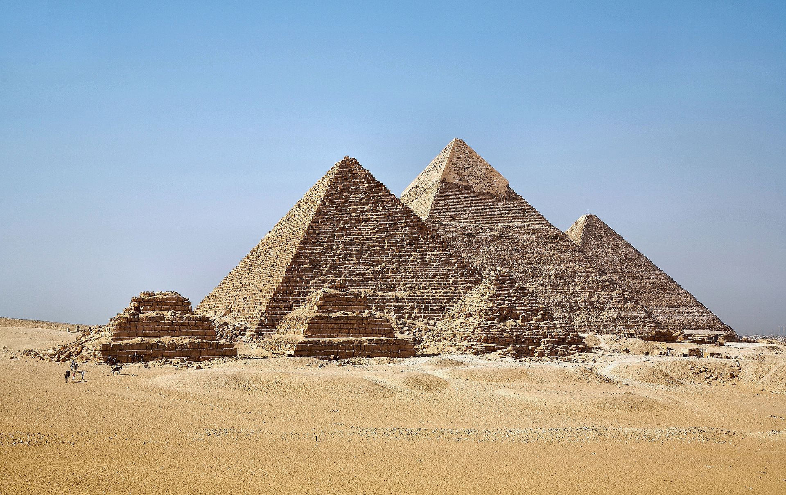

Регистрация в телеграм-боте
Вернуться в раздел "Публицистика Сергея Мавроди"

Отрывок из книги "История первой пирамиды" Сергея Мавроди:
Что же касается «пирамиды», то у меня вообще с тех пор на это слово устойчивая идиосинкразия. Не могу я, короче, его спокойно слышать! Раздражает оно меня. Как, наверное, раздражало Цезаря и Наполеона (так что я, по крайней мере, в хорошей компании!). Они ведь тоже в свое время среди этих проклятых пирамид чуть не сгинули. Правда, Цезарь-то хоть за Клеопатру страдал, а я?.. Да и выкрутились они все же, в конце концов, а вот что касается меня... Н-да... Ладно, продолжим.

Итак, что же такое «пирамида», точнее «финансовая пирамида». Согласно классическому определению, это когда деньги предыдущим платят за счет последующих. Это определение СМИ настолько растиражировали, что знакомо оно сегодня, наверное, даже школьнику. Причем, благодаря усилиям все тех же СМИ, ассоциируется слово «пирамида» с чем-то, во-первых, сугубо негативным, и, во-вторых, крайне недолговечным. С чем-то таким, что постоянно «рушится». Насчет негативности мы поговорим чуть позже, а вот что касается недолговечности, то я сейчас сделаю одно важное замечание, которое, наверное, многих и многих весьма удивит.
Так вот, пирамиды никто и никогда всерьез не изучал. Никто не знает, долговечные они или нет? Может, долговечны, а может, и не очень. Ничего решительно на этот счет не известно. Совершеннейшая terra incognita.
Нельзя же, в самом деле, принимать всерьез трогательные по своей наивности школьные рассуждения про геометрические прогрессии, «перевернутые пирамиды» и прочие математические страсти. Рассчитанные, по всей видимости, на людей, знакомых с математикой только на уровне таблицы умножения и четырех начальных правил арифметики.
Сложные формулы... «население земного шара»... - это, конечно, на простодушных дилетантов действует неотразимо, но вот ответьте, пожалуйста, на один простой вопрос.
А на какой базовой посылке эти «блестящие» логические построения основаны? Разве не на предположении, что каждый участник такой «пирамиды» вкладывает деньги только один раз (причем все участники - одну и ту же, конкретную сумму), держит их только очень короткое и строго определенное время, а потом все забирает и больше никогда к этой пирамиде и на пушечный выстрел не приближается?!
Т.е. на предположении, что все участники действуют абсолютно единообразно и по какому-то совершенно конкретному, раз и навсегда заданному, жесткому сценарию. Да, такая пирамида рухнет.
Но что это доказывает? Это доказывает лишь, что существует модель поведения участников, гибельная для системы.
Да такая модель существует в любой системе! Если все пассажиры баркаса вдруг перейдут на правый борт, баркас опрокинется. (Вспомните знаменитый эпизод из «Двенадцати стульев». Клуб «Четырех коней».) Если все молекулы воздуха в комнате вдруг неожиданно дружно устремятся вправо (а теоретически это возможно!), вы погибнете в левом углу.
Ну и что? Что это доказывает? Только то, что при движении на воде надо соблюдать технику безопасности. Что же касается молекул, то на все воля Божья.
Так же просто доказать, что пирамида вечна. Достаточно предположить, что первый раз все ее участники начнут забирать деньги только через сто лет. Или через тысячу. И ни на день раньше!
Если говорить всерьез, то правомерно следующее резюме. При разных моделях поведения участников время жизни системы тоже разное. Чтобы делать какие-то выводы о ее среднем реальном времени жизни, необходимо сначала изучить среднестатистическое, реальное поведение ее участников. Как они себя ведут на самом деле? В реальной жизни?
Какие суммы в среднем вкладывают? На какой срок? Каков процент крупных вкладчиков? Каков мелких? Сколько времени в среднем держат деньги крупные вкладчики? Сколько – мелкие? И т. д. и т. п. (А не брать какую-то произвольную, удобную для вас модель и делать на ее основании какие-то глобальные, далеко идущие и нужные вам выводы).
Исследований таких, естественно, никто никогда не проводил. Да и как их проводить, если пирамиды преданы анафеме? Как были в средние века преданы анафеме астрономия и медицина.
Фактически про пирамиды известно только одно. Что это сверхэффективная система по аккумулированию средств. Больше ничего. Так их изучать надо и учиться использовать! А не уподобляться средневековой инквизиции и не жечь их создателей на кострах.
Вы спросите, а как же многочисленные примеры краха пирамид? Достаточно вспомнить Албанию, да и все эти наши Хопры -Тибеты? Набрали денег, наобещали с три короба и разбежались. Миллионы обманутых, исчезнувшие в никуда миллиарды долларов, социальные потрясения... Разве это не доказывает, что пирамиды недолговечны?
А кто создавал эти пирамиды? Случайные, малообразованные люди. Парикмахеры, домохозяйки, мелкие служащие. Какого же иного результата можно было ожидать? Человеку случайно попала в руки волшебная палочка, и он начал ею размахивать, не думая о последствиях. Установите дикарям газовое отопление, и завтра же все племя взлетит на воздух.
Что начали делать эти люди со свалившимися на них с неба деньгами? Они принялись их немедленно и совершенно бездумно транжирить. Строить себе дворцы, виллы, покупать движимость и недвижимость. В лучшем случае, пытались их куда-то пристроить, вложить, вообразив себя новыми финансовыми гениями; в худшем - попросту воровать и «откладывать на черный день». Они прекрасно отдавали себе отчет в собственных «способностях» и понимали, что шальное богатство свалилось на них случайно и что это лишь до поры до времени.
Короче говоря, они сразу же принялись делать именно то, что делать ни в коем случае нельзя. А именно, они стали изымать деньги из системы. Соответственно, при первой же панике (а они время от времени всегда случаются) денег не хватило, и все рухнуло.
Впрочем, я ведь не знаю даже, как они себя в этом случае вообще вели. Я имею в виду - в начале паники. Пытались ли вообще бороться? Возможно, просто сразу же все бросили и пустились в ужасе бежать, куда глаза глядят.
Одним словом, эти примеры абсолютно не убедительны и ровным счетом ничего не доказывают. Разве что сверхэффективность пирамид как системы по привлечению денег, если даже любая домохозяйка может с их помощью легко собрать миллионы.
Да, есть примеры строительства финансовых пирамид и банкирами, но опять-таки, зачем они их строили? Чтобы поправить с их помощью свои изрядно пошатнувшиеся дела! Иными словами, только для того, чтобы забирать и забирать оттуда деньги. Естественно, что и тут результат был заранее предсказуем. Примеры, когда человек изначально поставил перед собой задачу построить в чистом виде финансовую пирамиду как систему, денег из нее не забирал, полностью отдавал себе отчет в происходящем и соответствующим образом действовал, мне лично неизвестны. Кроме своего собственного. И могу сказать, что результаты оказались более чем впечатляющими. Впрочем, всему своё время.
Итак, как видите, с вопросом о мнимой недолговечности финансовых пирамид все обстоит далеко не так просто, как на первый взгляд кажется. Я ничего не утверждаю, я всего лишь обращаю внимание на тот очевидный факт, что вопрос этот абсолютно не изучен. Все имеющиеся до сих пор «данные и доказательства» сводятся, по сути, к разного рода безапелляционным утверждениям типа: «Это совершенно очевидно...», «Ясно же, что вечно так продолжаться не может…», «Рано или поздно пирамида обязательно должна рухнуть...».
Между тем, именно все и дело-то тут как раз в нюансах. В том именно: «рано» или «поздно»? Через месяц или через сто лет? Согласитесь, что разница тут есть. Причем весьма существенная. (Вам же, наверное, не все равно, сколько вам осталось жить? Месяц или сто лет? Так же как и мне не все равно, сколько еще сидеть. Если, конечно, не смотреть на все это с точки зрения вечности, что посоветовал мне однажды следователь). А «рано или поздно» все, конечно, «рухнет». «Вечно», разумеется, ничто «продолжаться не может». Даже мой срок.
Но если вопрос о сроках жизни пирамид сложен и запутан, то вот с вопросом о вредности или полезности пирамид все предельно ясно. Точнее, такого вопроса нет вообще.
Это все равно что спрашивать, вредна или полезна лопата? Смотря что ею делают? Землю копают или по голове бьют?
Пирамида - это просто финансовый инструмент. И вопрос, вреден он или полезен, - не корректен. Все зависит от тех целей, для которых инструмент в данный момент используется.
Вопрос следует ставить иначе. Эффективен этот инструмент или нет? Вот что заслуживает обсуждения.
Впрочем, в данном случае и обсуждать-то нечего. Что-что, а уж эффективность-то пирамид сомнений никогда ни у кого не вызывала. Наоборот, именно их невероятная сверхэффективность как раз и служила всегда основой всех проблем, с ними связанных. Слишком уж это мощный и страшный инструмент - финансовая пирамида. И совершенно не изученный.
Вернуться в раздел "Публицистика Сергея Мавроди"
Регистрация в телеграм-боте